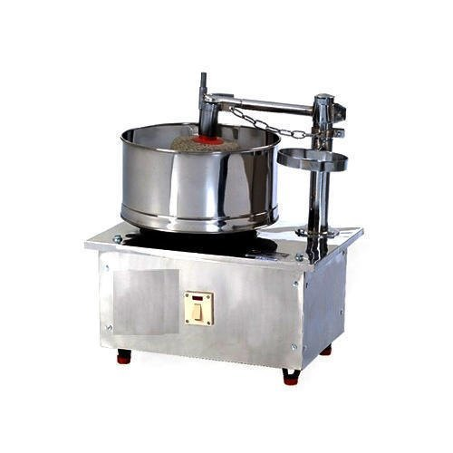
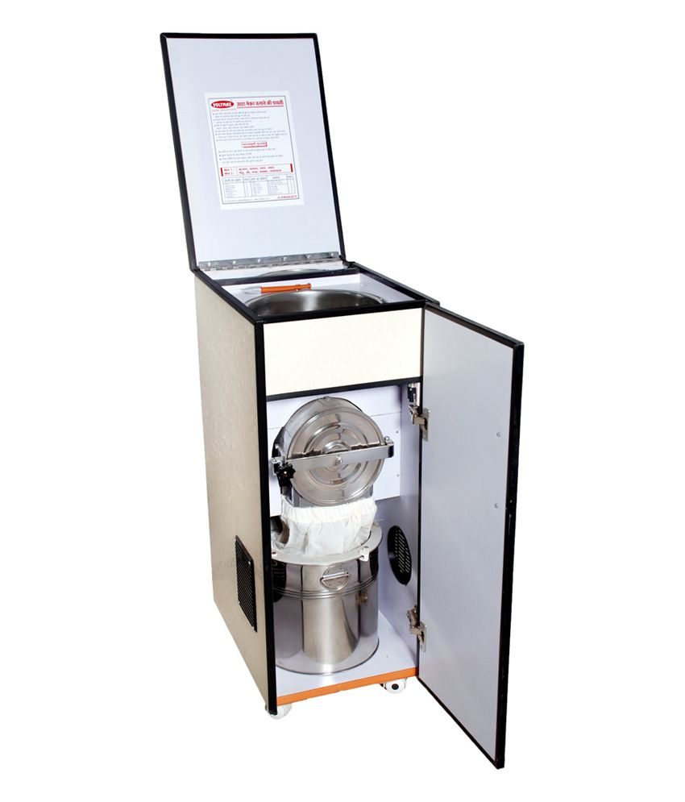
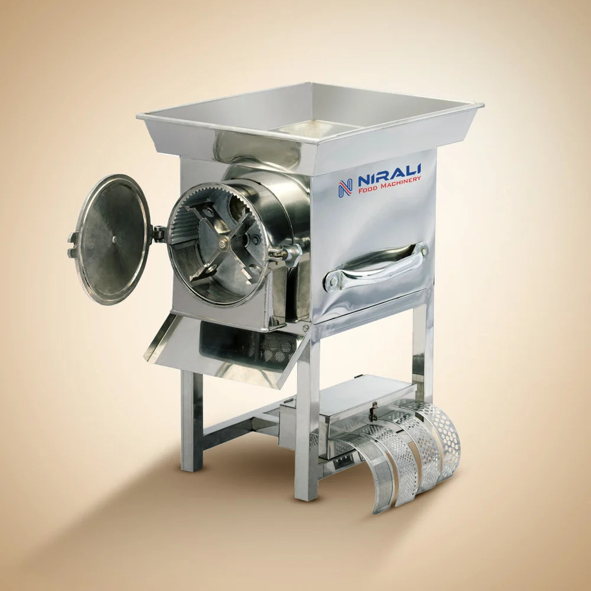
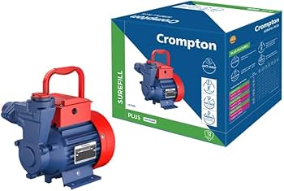
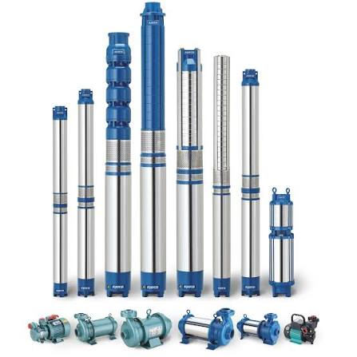

Machinery & Product Catalog
Browse our top-quality commercial food processing machinery, electric motors, and water pumps available at our Gwalior store.

Commercial Stainless Steel Wet Grinder
Heavy-duty stainless steel wet grinder designed for batter preparation, idli/dosa paste, and commercial kitchen grinding.

Stainless Steel Domestic Aata Chakki
Compact domestic flour mill machine for fresh flour grinding at home. Energy-efficient, low noise, and easy to operate.

Commercial Auto Pulverizer Machine
High-speed automatic pulverizer for fine grinding of wheat, maize, spices, and pulses in commercial quantities.

Gomti Heavy Duty Electric Motor
Heavy-duty single phase and 3-phase induction electric motors engineered for high durability in industrial machinery and pumps.

Agricultural Submersible Water Pumps
Multi-stage stainless steel submersible pumps designed for borewell water extraction, farm irrigation, and domestic supply.